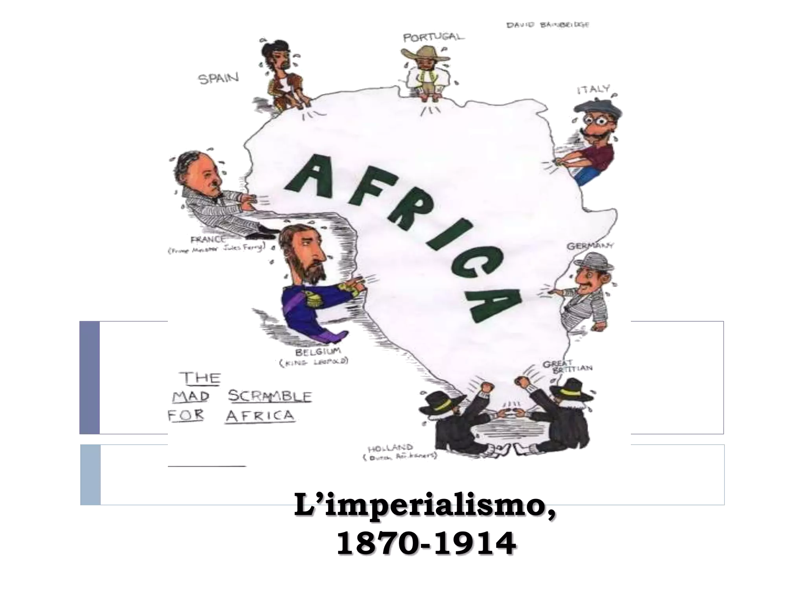

L'Imperialismo
Pagina storica a cura di Mario Rossi

Introduzione
L'imperialismo è la volontà di uno Stato di estendere il proprio dominio (politico, economico e culturale) su altri territori al fine di realizzare un impero.
Il termine venne coniato in Francia nell'Ottocento per definire il regime instaurato da Napoleone III, fu usato in seguito in Inghilterra, associato all'idea di dispotismo e infine il suo significato venne esteso alla tendenza di una nazione a imporre il suo dominio economico e a influenzare la politica interna di altri paesi con l'obiettivo di avviare la costruzione di imponenti imperi economici (ad es. sfruttare la manodopera a basso costo e le materie prime). Per i paesi dominanti uno degli obiettivi principali di questo sistema era quello di ricavare dai paesi occupati una grande quantità di materie prime a costi bassi. Il termine è usato talvolta per descrivere la politica estera di uno Stato tesa al mantenimento di colonie e domini in terre lontane, anche se lo Stato stesso non si considera un impero.
Inoltre, il termine imperialismo può indicare una posizione intellettuale e allo stesso tempo un'ideologia politico-economica e culturale, che implicherebbe la convinzione che la conquista e il mantenimento degli imperi abbiano una valenza positiva; tale punto di vista è spesso unito al presupposto di una superiorità culturale o di altro tipo (es. razziale) intrinseca al potere imperiale.
Storia
 Il fenomeno dell'imperialismo è scaturito in primo luogo da cause di tipo politico e di tipo ideologico, incanalate, articolate, ampliate ed inserite in un più generale disegno economico. Tale desiderio di espansione è dovuto ai cambiamenti della situazione economica e non solo. È anche legato a motivazioni politiche e persino ideologiche, che variavano a seconda della situazione del paese colonizzatore e dei paesi da colonizzare. Sul piano ideologico-politico l'imperialismo è dovuto all'affermarsi di atteggiamenti nazionalistici tesi ad esaltare i caratteri ritenuti originali della propria nazione che non si configurano come il nazionalismo degli inizi dell'Ottocento, e cioè caratterizzato dalle tensioni indipendentistiche, ma è ormai ornato (e quindi svilito) da quel sentimento di "prestigio" tanto agognato dalle precedenti nazioni europee.
A tutto ciò era congiunta una radicata convinzione di una superiorità biologica della propria razza rispetto alle popolazioni di quei paesi che non riuscivano a dare lo slancio alle loro economie, in particolare i popoli africani.
Il fenomeno dell'imperialismo è scaturito in primo luogo da cause di tipo politico e di tipo ideologico, incanalate, articolate, ampliate ed inserite in un più generale disegno economico. Tale desiderio di espansione è dovuto ai cambiamenti della situazione economica e non solo. È anche legato a motivazioni politiche e persino ideologiche, che variavano a seconda della situazione del paese colonizzatore e dei paesi da colonizzare. Sul piano ideologico-politico l'imperialismo è dovuto all'affermarsi di atteggiamenti nazionalistici tesi ad esaltare i caratteri ritenuti originali della propria nazione che non si configurano come il nazionalismo degli inizi dell'Ottocento, e cioè caratterizzato dalle tensioni indipendentistiche, ma è ormai ornato (e quindi svilito) da quel sentimento di "prestigio" tanto agognato dalle precedenti nazioni europee.
A tutto ciò era congiunta una radicata convinzione di una superiorità biologica della propria razza rispetto alle popolazioni di quei paesi che non riuscivano a dare lo slancio alle loro economie, in particolare i popoli africani.
Paesi che recentemente avevano conseguito un solido sviluppo economico, al quale si era aggiunto anche l'elemento di un capitalismo che non era più "industriale" ma "finanziario" (cioè sorretto da prestiti da parte di istituti di credito), ritenevano l'espansione verso territori d'oltremare una buona causa per:
- impossessarsi dei beni a basso costo;
- opportunità di investimento dei capitali in territori nei quali era possibile avviare attività ad alto profitto.
La missione civilizzatrice
Oltre a motivazioni economiche, gli europei erano spinti verso altri continenti anche dalla convinzione etnocentrica di avere una responsabilità di esportare la civiltà bianca. Poiché l'Europa considerava di aver raggiunto un progresso ineccepibile in molti campi, soprattutto in ambito tecnologico, sociale e medico, giudicava anche che questo stile di vita dovesse essere esportato - o imposto - nei territori considerati "più arretrati". In particolare i diritti umani erano un campo cui per esempio i britannici si ritenevano chiamati ad esportare, poiché ad esempio vi era la credenza che in India alcune sette allora praticassero ancora dei sacrifici umani in onore della dea Kālī, o in alcune parti dell'Africa Centrale fosse presente il cannibalismo; costumi ai quali l'intervento più o meno violento degli europei mise fine. La missione civilizzatrice era quindi intesa in questo senso oltre che a formare una élite di semi-governati autoctoni adeguatamente formati nelle scuole e nelle università d'Europa che potevano coadiuvare gli europei nel governo delle colonie.
Conseguenze
| Politiche |
Sul piano politico l'espansione coloniale finì per favorire la formazione o il risveglio di nazionalismi locali, ad opera soprattutto dei nuovi quadri dirigenti, che si formarono nelle scuole europee e vi assorbirono gli ideali democratici e i principi di nazionalità. |
L'Europa si trovò ad esportare quello che meno avrebbe desiderato: il bisogno di autogovernarsi e di decidere del proprio destino. I nuovi governanti che si trovarono ad amministrare le nazioni indipendenti nell'era post-coloniale travisarono completamente gli ideali di democrazia e giustizia acquisiti studiando in Europa. Essi sedotti dal potere grazie alla loro istruzione poterono soggiogare in breve tempo le popolazioni locali formando delle dittature. I principi egualitari di cui tanto l'Europa si vantava non furono assorbiti o meglio le nuove élite di governanti capirono come sfruttare a loro favore gli strumenti appresi in Europa nonostante durante le guerre per l'indipendenza spesso si nascondessero dietro la bandiera dell'oppressione europea e dell'antidemocraticità, bandiera che non tardò ad essere eliminata una volta che l'indipendenza veniva raggiunta. |
| Economiche |
Dal punto di vista economico, l'esperienza coloniale ebbe effetti positivi sui paesi che ne furono investiti, portando ad un miglioramento dell'apparato produttivo, grazie all'inserimento delle nuove tecnologie europee anche i popoli colonizzati poterono giovarne dei benefici, in molte colonie le popolazioni locali impiegate nelle attività di produzione venivano anche pagati in modo tale da poter far circolare la moneta ed agevolare gli scambi. |
Furono create economie orientate essenzialmente all'esportazione e alle monocolture, in molti casi però la colonia era precedentemente orientata verso un mercato interno anche se la produzione era decisamente inferiore e quindi si ebbe una sorta di shock iniziale che fu comunque assorbito nel tempo.
Fu messo in moto un processo di sviluppo, ma in funzione degli interessi europei, i quali del resto si appropriarono sistematicamente di gran parte dei ricavi economici dei paesi colonizzati. |
| Culturali |
L'effetto dell'imperialismo sulle culture dei paesi colonizzati fu alquanto rilevante.
|
I sistemi culturali che avevano una più solida tradizione e che erano legati a strutture politico-sociali organizzate benché molto primitivi, come nei paesi dell'Asia e del Nord Africa si difesero meglio nonostante alla fine furono soppiantati da sistemi democratici basati su modelli europei.
|
Ricezione
La grande spartizione imperialista del mondo ha visto diverse interpretazioni basate su un intreccio di motivazioni economiche, di ambizioni politiche, e situazioni culturali nei vari Stati. Genericamente possono distinguersi due principali analisi: per gli storici "marxisti" l'imperialismo nasce per cause economiche: i grandi gruppi industriali e finanziari spingono i loro governi all'avventura coloniale dando l'avvio a una logica militarista che troverà sbocco nella prima guerra mondiale. Gli storici non marxisti negano le motivazioni economiche alla base dell'aggressività imperialista e vedono come cause del fenomeno motivi di ordine psicologico, ideologico e culturale. Constatano inoltre come la politica coloniale, che sarà progressivamente abbandonata, non abbia portato a quello sviluppo di mercati redditizi che ci si attendeva dai grandi investimenti oltremare e quindi allo scontro tra gli imperi coloniali.[2] Il dibattito ha preso il via dall'opera dello storico inglese John A. Hobson del 1902 (“Imperialism”)
Torna all'inizio